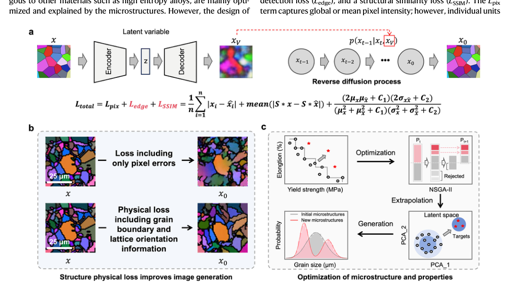

每日论文推荐
按当前设置展示：核心 6 篇、扩展 0 篇。完整批次可在历史归档中阅读。
检索本期论文
开启 JavaScript 后可使用筛选与排序。论文与目录可直接阅读。
本期暂无核心推荐 扩展阅读已关闭，可浏览历史归档或调整研究方向。
没有符合条件的论文 试试其他关键词，或减少筛选条件。
清除筛选
Crossref 2026-10-15 CNS 子刊 AI 智能运维
Machine-learning surrogates enable rapid prediction of 3-D substrate gradients in industrial bioreactors
Víctor Puig-I-Laborda, Jorge Carrasco Muriel, Andrea Castañeda Tena 等 Nature Communications
摘要解读已完成，全文待补充
工业搅拌罐中底物空间分布影响过程设计与控制，但高保真CFD计算成本限制了常规应用。作者以760次CFD模拟训练代理模型，结合全局工况与局部空间描述符预测完整三维浓度场。摘要报告注意力神经网络测试R²≈0.91，并实现毫秒级推理，相比CFD最高加速百万倍。其价值在于支持运行空间探索与数字孪生；当前仅有摘要，尚不能核查误差分布及实际部署效果。[摘要]
原图待获取 · 查看原文
Crossref 2026-09-30 CNS 子刊 大模型 智能体 结构生成式设计与可靠性优化
Large language model-driven inverse design of acoustic valley-Hall insulators
Yinchu Wang, Xiaofeng Li, Silin Wang 等 npj Computational Materials
摘要解读已完成，全文待补充
本文针对声学谷霍尔绝缘体的目标带隙逆向设计，提出双智能体协作框架：设计智能体基于强化学习生成的数据库微调，管理智能体负责需求解析、任务规划、仿真调用及结果生成。系统可输出结构参数、能带、本征模态场和可制造模型文件。摘要称测试集带隙误差分析支持设计精度，但未给出具体数值与对照结果。解读：其阅读价值主要在于连接语言需求、结构生成和数值验证的工作流，而非已获充分量化证明的性能优势。[摘要]
原图待获取 · 查看原文
OpenAlex 2026-09-29 CNS 子刊 结构生成式设计与可靠性优化
Generative design of high-fidelity microstructures using physics-aware machine learning
Weijie Liao, Kaidi Li, Bin Tang 等 Nature Communications
由扩展阅读升级 · 上次 2026-10-02 第 1 批 与所给generative_design方向直接契合：论文具有物理约束生成与多目标优化的明确方法，并报告候选①的实验、CPFE和机器学习预测一致。[P3、P7]当前连续原文足以支持重点阅读判断，但不能证明全部候选泛化、具体提升幅度或可靠性应用；公式缺项也限制复现。[P9]
查看原推荐批次 全文精读已完成 · 原文有缺项
资料核对说明 图3i–n的原页图例为蓝圆点Train、红方点Test；原页图注却将蓝圆点和红方点分别对应20个训练、5个测试高分辨率图像，颜色与数据集对应写反。正文确认训练20幅、测试5幅。属于原图注对应错误，不是文字提取错误；影响训练与测试聚合点的识别，不妨碍读取六项特征对比。 图4c原页图例明确标注延伸率模型Test R²=0.92，而正文称两个模型测试R²均“exceeding 0.92”。已核实正文与图示措辞不一致；图示按0.92记录，不能据此确认未经舍入值是否严格超过0.92。影响预测精度的精确表述，不影响页面识读。 公式(14)原页确实写为p_θ(x_{t−1}|x_t,x_V)=N(x_{t−1};ε_θ(x_t,t,x_V))，仅列一个高斯参数，未给出协方差；随后正文将ε_θ称为预测噪声，却未在该式给出噪声预测到反向分布均值的转换。现有公式和文字均可识读，但不足以完整确定反向采样分布；不补造缺失参数或转换式。 论文研究如何生成兼具物理真实性与多项目标性能的分布外微结构。作者以25组镍基高温合金微结构及拉伸数据为起点，将晶界和晶体学信息纳入生成模型损失，并结合潜空间采样与多目标优化开展逆向设计。生成结构呈双峰晶粒分布，候选①的预测、晶体塑性模拟与实验结果被描述为“agree well”。解读：其价值主要在材料结构设计，而非已证实的运维应用；反向扩散公式缺项及补充资料未提供，限制独立复现。

查看大图
Fig. 1 · 原文配图
原文图注：Fig. 1 | Physics-aware framework for high-fidelity microstructure generation and inverse design. a Schematic of the microstructure generation and refinement workflow combining VAE and DDPM. Model training is guided by a physics- informed loss function that incorporates not only pixel-wise similarity but also structural features, including grain boundaries and lattice orientation (see Methods for details). b Representative microstructures generated by models trained using pixel-wise loss alone exhibit incomplete grain boundaries and excessive
Liao, Weijie et al.原文图页 · CC BY-NC-ND 4.0
Crossref 2026-09-25 CNS 子刊 结构生成式设计与可靠性优化
Boron-assisted synthesis of compositionally complex amorphous oxides via short-range-order-constrained generative design
Honglin Li, Chuhao Liu, Yongfeng Guo 等 Science Advances
摘要解读已完成，全文待补充
【摘要】研究以成分复杂非晶氧化物为对象，将短程原子有序约束引入生成框架 ApolloX，探索硼含量对非晶形成的影响。以 FeCoNiMoBO x 为模型，模拟显示增硼抑制原子扩散与结晶，并稳定以 BO 3 为中心的局部结构。作者合成三种不同硼含量的组成，通过同步辐射散射和电子显微术验证预测的结构演化，并拓展至更多多金属组成。当前仅有摘要，可判断其设计与验证路线，不能评价具体性能及预测精度。
原图待获取 · 查看原文
Crossref 2026-09-19 CNS 子刊 结构生成式设计与可靠性优化
Bayesian bilevel operator learning with low-rank adaptation for efficient uncertainty quantification of PDE inverse problems
Ray Zirui Zhang, Christopher E. Miles, Xiaohui Xie 等 Nature Communications
摘要解读已完成，全文待补充
偏微分方程反问题不仅要估计参数，还需刻画推断的不确定性。本文提出贝叶斯双层局部算子学习框架B-BiLO：上层通过哈密顿蒙特卡洛采样参数后验，下层以低秩适配微调神经网络，局部近似解算子。摘要称，该方法无需合成数据或伴随方程，并通过确定性优化权重避免在高维权重空间采样。作者还分析下层近似优化误差对后验精度的影响，并在包含肿瘤生长的PDE模型上开展数值实验；具体精度、加速幅度及适用条件尚无法核实。[摘要]
原图待获取 · 查看原文
Crossref 2026-08-05 CNS 子刊 结构生成式设计与可靠性优化
IGlasGAN: an inverse design framework for inorganic glass materials based on generative artificial intelligence
Jing Tian, Jijie Zheng, Bentao Zhang 等 npj Computational Materials
摘要解读已完成，全文待补充
【摘要】本文面向无机玻璃多性能协同设计，提出IGlasGAN框架，将性能区间要求直接映射为玻璃组成，并连接生成、评价与验证流程。模型采用改进的WGAN-GP-CP架构，结合性能导航机制与扩展归一化策略，以2445个实验样本训练，在OLED基板玻璃及两个偏离训练分布的目标场景中开展设计。三个场景共实验表征12个生成样本，多数性能偏差在±3.50%以内，但热膨胀系数最大偏差为13.03%。现有依据仅为摘要，不能据此确认全面泛化能力。
原图待获取 · 查看原文
本期暂无核心推荐，可浏览历史归档或调整研究方向。